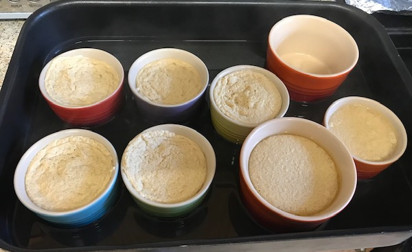

Sugar custards
- Preheat oven to 140°C
- Whisk to combine in a bowl
- Warm to dissolve sugar
- 500ml milk
- 80g brown sugar
- 1 tbsp vanilla extract
- pinch of salt (optional)
- Gradually add milk to yolks whisking constantly
- Place 4 ramekins in a baking dish
- Divide mixture between ramekins
- Pour warm water into baking dish to halfway up sides of ramekins
- Cover each ramekins with foil and bake for 45 mins until custards are set
- Leave to cool for 2 hours
- Reduced heat from 160°C
- Too much heat and custard will split
- Try using half milk and half cream (or 300ml cream)
